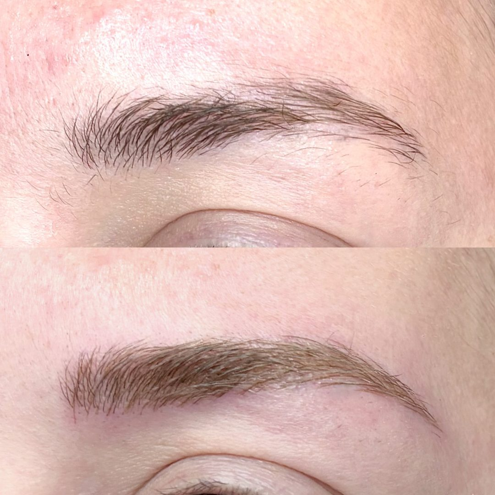
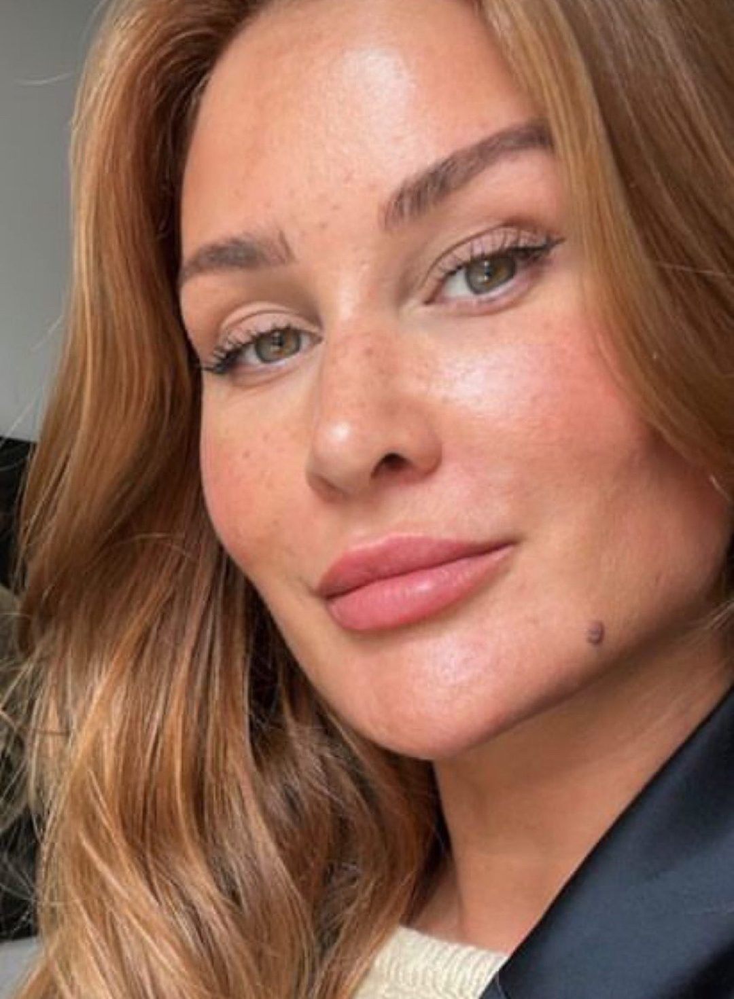
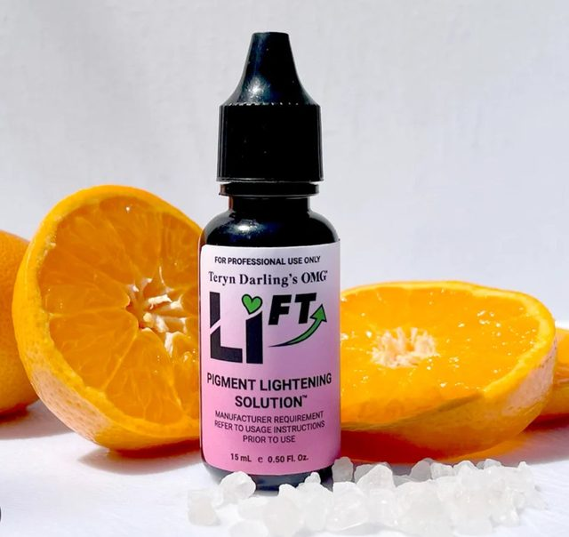
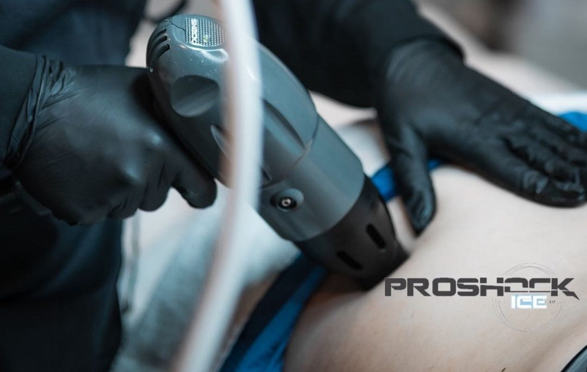

Behandlingar i Göteborg
Laura arbetar endast med de senaste teknikerna och skapar endast naturliga resultat som är anpassade till kundens naturliga hudtyp, undertoner, hårfärg och form. Laura är emot kosmetisk tatuering som ”trendar”. Hennes filosofi går ut på att skapa naturliga resultat som ser ut som kundens egna, även utan smink. Lauras arbetsverktyg är av premiumklass och hon samarbetar med världsledande aktörer i sina val av maskiner, nålar, pigment med mera.
Kosmetisk tatuering
5 behandlingar
Puderbryn
Mjukt skuggade, naturliga bryn med en pudrad effekt, i en form anpassad efter dina ansiktsmått.

Strokes
Realistiska, hårstråliknande bryn som jämnar till formen och fyller ut där det saknas strån.

Läppar
Förstärker läpparnas naturliga färg, jämnar ut tonen och ger ett fylligare intryck utan fillers.

Fräknar
Realistiska fräknar i varierande storlek och nyans för ett mjukt, naturligt och solkysst uttryck.

Lashliner
En mycket tunn förstärkning längs fransraden som ger illusionen av tätare fransar, utan synlig linje.
Hud, hårbotten, kropp och korrigering
4 behandlingar
Microneedling
En hudföryngrande behandling där tunna nålar skapar mikroskopiska kanaler i huden för att stimulera kollagenproduktionen.

SMP
En avancerad behandling som skapar intryck av tätare hår genom realistiska pigment i hårbotten.

LIFT Ink Removal
En skonsam metod för borttagning eller korrigering av oönskad tatuering och permanent makeup, utan laser.

Fettfrysning
Proshock Ice™ kombinerar fettfrysning och stötvågsterapi för att reducera lokala fettdepåer och celluliter.
Puder eller strokes? Hitta rätt brynmetod
Microblading passar inte alla. Svara på fyra frågor så får du en rekommendation byggd på Lauras egna riktlinjer för fet hy, porer, egna strån och gamla tatueringar.
Rekommendationen ersätter inte en bedömning. Laura går alltid igenom form och färg med dig innan behandlingen.
Osäker på vad som passar dig?
Boka en kostnadsfri konsultation på plats, per telefon eller via Zoom.